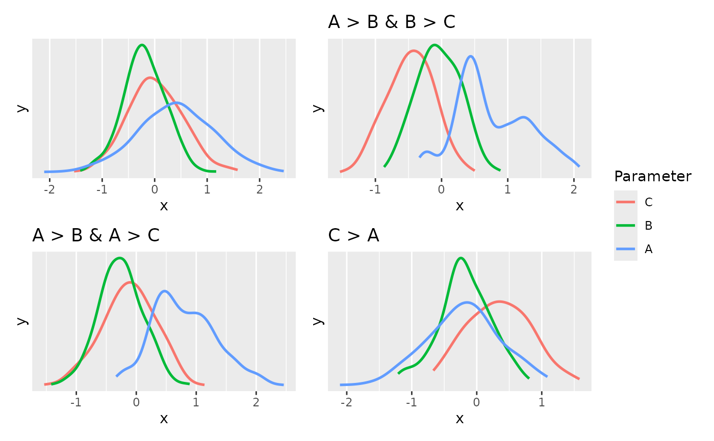

Bayes Factors (BF) for Order Restricted Models
Source:R/bayesfactor_restricted.R
bayesfactor_restricted.RdThis method computes Bayes factors for comparing a model with an order restrictions on its parameters
with the fully unrestricted model. Note that this method should only be used for confirmatory analyses.
The bf_* function is an alias of the main function.
For more info, in particular on specifying correct priors for factors with more than 2 levels, see the Bayes factors vignette.
Usage
bayesfactor_restricted(
posterior,
hypothesis,
prior = NULL,
verbose = TRUE,
...
)
bf_restricted(posterior, hypothesis, prior = NULL, verbose = TRUE, ...)
# S3 method for stanreg
bayesfactor_restricted(
posterior,
hypothesis,
prior = NULL,
verbose = TRUE,
effects = c("fixed", "random", "all"),
component = c("conditional", "zi", "zero_inflated", "all"),
...
)
# S3 method for brmsfit
bayesfactor_restricted(
posterior,
hypothesis,
prior = NULL,
verbose = TRUE,
effects = c("fixed", "random", "all"),
component = c("conditional", "zi", "zero_inflated", "all"),
...
)
# S3 method for blavaan
bayesfactor_restricted(
posterior,
hypothesis,
prior = NULL,
verbose = TRUE,
...
)
# S3 method for emmGrid
bayesfactor_restricted(
posterior,
hypothesis,
prior = NULL,
verbose = TRUE,
...
)
# S3 method for bayesfactor_restricted
as.logical(x, which = c("posterior", "prior"), ...)Arguments
- posterior
A
stanreg/brmsfitobject,emmGridor a data frame - representing a posterior distribution(s) from (see Details).- hypothesis
A character vector specifying the restrictions as logical conditions (see examples below).
- prior
An object representing a prior distribution (see Details).
- verbose
Toggle off warnings.
- ...
Currently not used.
- effects
Should results for fixed effects, random effects or both be returned? Only applies to mixed models. May be abbreviated.
- component
Should results for all parameters, parameters for the conditional model or the zero-inflated part of the model be returned? May be abbreviated. Only applies to brms-models.
- x
An object of class
bayesfactor_restricted- which
Should the logical matrix be of the posterior or prior distribution(s)?
Value
A data frame containing the (log) Bayes factor representing evidence
against the un-restricted model (Use as.numeric() to extract the
non-log Bayes factors; see examples). (A bool_results attribute contains
the results for each sample, indicating if they are included or not in the
hypothesized restriction.)
Details
This method is used to compute Bayes factors for order-restricted models vs un-restricted
models by setting an order restriction on the prior and posterior distributions
(Morey & Wagenmakers, 2013).
(Though it is possible to use bayesfactor_restricted() to test interval restrictions,
it is more suitable for testing order restrictions; see examples).
Setting the correct prior
For the computation of Bayes factors, the model priors must be proper priors
(at the very least they should be not flat, and it is preferable that
they be informative); As the priors for the alternative get wider, the
likelihood of the null value(s) increases, to the extreme that for completely
flat priors the null is infinitely more favorable than the alternative (this
is called the Jeffreys-Lindley-Bartlett paradox). Thus, you should
only ever try (or want) to compute a Bayes factor when you have an informed
prior.
(Note that by default, brms::brm() uses flat priors for fixed-effects;
See example below.)
It is important to provide the correct prior for meaningful results.
When
posterioris a numerical vector,priorshould also be a numerical vector.When
posterioris adata.frame,priorshould also be adata.frame, with matching column order.When
posterioris astanreg,brmsfitor other supported Bayesian model:priorcan be set toNULL, in which case prior samples are drawn internally.priorcan also be a model equivalent toposteriorbut with samples from the priors only. Seeunupdate().Note: When
posterioris abrmsfit_multiplemodel,priormust be provided.
When
posterioris anemmGrid/emm_listobject:priorshould also be anemmGrid/emm_listobject equivalent toposteriorbut created with a model of priors samples only. Seeunupdate().priorcan also be the original (posterior) model. If so, the function will try to update theemmGrid/emm_listto use theunupdate()d prior-model. (This cannot be done forbrmsfitmodels.)Note: When the
emmGridhas undergone any transformations ("log","response", etc.), orregriding, thenpriormust be anemmGridobject, as stated above.
Interpreting Bayes Factors
A Bayes factor greater than 1 can be interpreted as evidence against the null, at which one convention is that a Bayes factor greater than 3 can be considered as "substantial" evidence against the null (and vice versa, a Bayes factor smaller than 1/3 indicates substantial evidence in favor of the null-model) (Wetzels et al. 2011).
References
Morey, R. D., & Wagenmakers, E. J. (2014). Simple relation between Bayesian order-restricted and point-null hypothesis tests. Statistics & Probability Letters, 92, 121-124.
Morey, R. D., & Rouder, J. N. (2011). Bayes factor approaches for testing interval null hypotheses. Psychological methods, 16(4), 406.
Morey, R. D. (Jan, 2015). Multiple Comparisons with BayesFactor, Part 2 – order restrictions. Retrieved from https://richarddmorey.org/category/order-restrictions/.
Examples
set.seed(444)
library(bayestestR)
prior <- data.frame(
A = rnorm(500),
B = rnorm(500),
C = rnorm(500)
)
posterior <- data.frame(
A = rnorm(500, .4, 0.7),
B = rnorm(500, -.2, 0.4),
C = rnorm(500, 0, 0.5)
)
hyps <- c(
"A > B & B > C",
"A > B & A > C",
"C > A"
)
(b <- bayesfactor_restricted(posterior, hypothesis = hyps, prior = prior))
#> Bayes Factor (Order-Restriction)
#>
#> Hypothesis P(Prior) P(Posterior) BF
#> A > B & B > C 0.16 0.23 1.39
#> A > B & A > C 0.36 0.59 1.61
#> C > A 0.46 0.34 0.742
#>
#> * Bayes factors for the restricted model vs. the un-restricted model.
bool <- as.logical(b, which = "posterior")
head(bool)
#> A > B & B > C A > B & A > C C > A
#> [1,] TRUE TRUE FALSE
#> [2,] TRUE TRUE FALSE
#> [3,] TRUE TRUE FALSE
#> [4,] FALSE TRUE FALSE
#> [5,] FALSE FALSE TRUE
#> [6,] FALSE TRUE FALSE
see::plots(
plot(estimate_density(posterior)),
# distribution **conditional** on the restrictions
plot(estimate_density(posterior[bool[, hyps[1]], ])) + ggplot2::ggtitle(hyps[1]),
plot(estimate_density(posterior[bool[, hyps[2]], ])) + ggplot2::ggtitle(hyps[2]),
plot(estimate_density(posterior[bool[, hyps[3]], ])) + ggplot2::ggtitle(hyps[3]),
guides = "collect"
)

# \dontrun{
# rstanarm models
# ---------------
data("mtcars")
fit_stan <- rstanarm::stan_glm(mpg ~ wt + cyl + am,
data = mtcars, refresh = 0
)
hyps <- c(
"am > 0 & cyl < 0",
"cyl < 0",
"wt - cyl > 0"
)
bayesfactor_restricted(fit_stan, hypothesis = hyps)
#> Sampling priors, please wait...
#> Bayes Factor (Order-Restriction)
#>
#> Hypothesis P(Prior) P(Posterior) BF
#> am > 0 & cyl < 0 0.25 0.56 2.25
#> cyl < 0 0.50 1.00 1.99
#> wt - cyl > 0 0.50 0.10 0.197
#>
#> * Bayes factors for the restricted model vs. the un-restricted model.
# }
# \dontrun{
# emmGrid objects
# ---------------
# replicating http://bayesfactor.blogspot.com/2015/01/multiple-comparisons-with-bayesfactor-2.html
data("disgust")
contrasts(disgust$condition) <- contr.equalprior_pairs # see vignette
fit_model <- rstanarm::stan_glm(score ~ condition, data = disgust, family = gaussian())
#>
#> SAMPLING FOR MODEL 'continuous' NOW (CHAIN 1).
#> Chain 1:
#> Chain 1: Gradient evaluation took 1.9e-05 seconds
#> Chain 1: 1000 transitions using 10 leapfrog steps per transition would take 0.19 seconds.
#> Chain 1: Adjust your expectations accordingly!
#> Chain 1:
#> Chain 1:
#> Chain 1: Iteration: 1 / 2000 [ 0%] (Warmup)
#> Chain 1: Iteration: 200 / 2000 [ 10%] (Warmup)
#> Chain 1: Iteration: 400 / 2000 [ 20%] (Warmup)
#> Chain 1: Iteration: 600 / 2000 [ 30%] (Warmup)
#> Chain 1: Iteration: 800 / 2000 [ 40%] (Warmup)
#> Chain 1: Iteration: 1000 / 2000 [ 50%] (Warmup)
#> Chain 1: Iteration: 1001 / 2000 [ 50%] (Sampling)
#> Chain 1: Iteration: 1200 / 2000 [ 60%] (Sampling)
#> Chain 1: Iteration: 1400 / 2000 [ 70%] (Sampling)
#> Chain 1: Iteration: 1600 / 2000 [ 80%] (Sampling)
#> Chain 1: Iteration: 1800 / 2000 [ 90%] (Sampling)
#> Chain 1: Iteration: 2000 / 2000 [100%] (Sampling)
#> Chain 1:
#> Chain 1: Elapsed Time: 0.04 seconds (Warm-up)
#> Chain 1: 0.051 seconds (Sampling)
#> Chain 1: 0.091 seconds (Total)
#> Chain 1:
#>
#> SAMPLING FOR MODEL 'continuous' NOW (CHAIN 2).
#> Chain 2:
#> Chain 2: Gradient evaluation took 1.1e-05 seconds
#> Chain 2: 1000 transitions using 10 leapfrog steps per transition would take 0.11 seconds.
#> Chain 2: Adjust your expectations accordingly!
#> Chain 2:
#> Chain 2:
#> Chain 2: Iteration: 1 / 2000 [ 0%] (Warmup)
#> Chain 2: Iteration: 200 / 2000 [ 10%] (Warmup)
#> Chain 2: Iteration: 400 / 2000 [ 20%] (Warmup)
#> Chain 2: Iteration: 600 / 2000 [ 30%] (Warmup)
#> Chain 2: Iteration: 800 / 2000 [ 40%] (Warmup)
#> Chain 2: Iteration: 1000 / 2000 [ 50%] (Warmup)
#> Chain 2: Iteration: 1001 / 2000 [ 50%] (Sampling)
#> Chain 2: Iteration: 1200 / 2000 [ 60%] (Sampling)
#> Chain 2: Iteration: 1400 / 2000 [ 70%] (Sampling)
#> Chain 2: Iteration: 1600 / 2000 [ 80%] (Sampling)
#> Chain 2: Iteration: 1800 / 2000 [ 90%] (Sampling)
#> Chain 2: Iteration: 2000 / 2000 [100%] (Sampling)
#> Chain 2:
#> Chain 2: Elapsed Time: 0.041 seconds (Warm-up)
#> Chain 2: 0.053 seconds (Sampling)
#> Chain 2: 0.094 seconds (Total)
#> Chain 2:
#>
#> SAMPLING FOR MODEL 'continuous' NOW (CHAIN 3).
#> Chain 3:
#> Chain 3: Gradient evaluation took 1.1e-05 seconds
#> Chain 3: 1000 transitions using 10 leapfrog steps per transition would take 0.11 seconds.
#> Chain 3: Adjust your expectations accordingly!
#> Chain 3:
#> Chain 3:
#> Chain 3: Iteration: 1 / 2000 [ 0%] (Warmup)
#> Chain 3: Iteration: 200 / 2000 [ 10%] (Warmup)
#> Chain 3: Iteration: 400 / 2000 [ 20%] (Warmup)
#> Chain 3: Iteration: 600 / 2000 [ 30%] (Warmup)
#> Chain 3: Iteration: 800 / 2000 [ 40%] (Warmup)
#> Chain 3: Iteration: 1000 / 2000 [ 50%] (Warmup)
#> Chain 3: Iteration: 1001 / 2000 [ 50%] (Sampling)
#> Chain 3: Iteration: 1200 / 2000 [ 60%] (Sampling)
#> Chain 3: Iteration: 1400 / 2000 [ 70%] (Sampling)
#> Chain 3: Iteration: 1600 / 2000 [ 80%] (Sampling)
#> Chain 3: Iteration: 1800 / 2000 [ 90%] (Sampling)
#> Chain 3: Iteration: 2000 / 2000 [100%] (Sampling)
#> Chain 3:
#> Chain 3: Elapsed Time: 0.04 seconds (Warm-up)
#> Chain 3: 0.052 seconds (Sampling)
#> Chain 3: 0.092 seconds (Total)
#> Chain 3:
#>
#> SAMPLING FOR MODEL 'continuous' NOW (CHAIN 4).
#> Chain 4:
#> Chain 4: Gradient evaluation took 1.1e-05 seconds
#> Chain 4: 1000 transitions using 10 leapfrog steps per transition would take 0.11 seconds.
#> Chain 4: Adjust your expectations accordingly!
#> Chain 4:
#> Chain 4:
#> Chain 4: Iteration: 1 / 2000 [ 0%] (Warmup)
#> Chain 4: Iteration: 200 / 2000 [ 10%] (Warmup)
#> Chain 4: Iteration: 400 / 2000 [ 20%] (Warmup)
#> Chain 4: Iteration: 600 / 2000 [ 30%] (Warmup)
#> Chain 4: Iteration: 800 / 2000 [ 40%] (Warmup)
#> Chain 4: Iteration: 1000 / 2000 [ 50%] (Warmup)
#> Chain 4: Iteration: 1001 / 2000 [ 50%] (Sampling)
#> Chain 4: Iteration: 1200 / 2000 [ 60%] (Sampling)
#> Chain 4: Iteration: 1400 / 2000 [ 70%] (Sampling)
#> Chain 4: Iteration: 1600 / 2000 [ 80%] (Sampling)
#> Chain 4: Iteration: 1800 / 2000 [ 90%] (Sampling)
#> Chain 4: Iteration: 2000 / 2000 [100%] (Sampling)
#> Chain 4:
#> Chain 4: Elapsed Time: 0.038 seconds (Warm-up)
#> Chain 4: 0.053 seconds (Sampling)
#> Chain 4: 0.091 seconds (Total)
#> Chain 4:
em_condition <- emmeans::emmeans(fit_model, ~condition)
#> Warning: Model has 0 prior weights, but we recovered 150 rows of data.
#> So prior weights were ignored.
hyps <- c("lemon < control & control < sulfur")
bayesfactor_restricted(em_condition, prior = fit_model, hypothesis = hyps)
#> Sampling priors, please wait...
#> Warning: Model has 0 prior weights, but we recovered 150 rows of data.
#> So prior weights were ignored.
#> Bayes Factor (Order-Restriction)
#>
#> Hypothesis P(Prior) P(Posterior) BF
#> lemon < control & control < sulfur 0.17 0.75 4.28
#>
#> * Bayes factors for the restricted model vs. the un-restricted model.
# > # Bayes Factor (Order-Restriction)
# >
# > Hypothesis P(Prior) P(Posterior) BF
# > lemon < control & control < sulfur 0.17 0.75 4.49
# > ---
# > Bayes factors for the restricted model vs. the un-restricted model.
# }